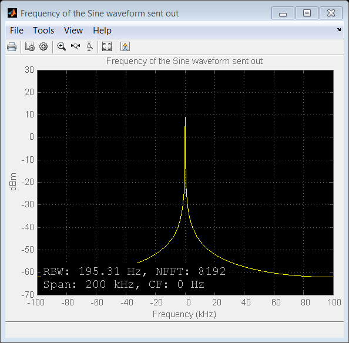

Frequency Offset Calibration Transmitter with USRP® Hardware
This example shows how to use the Universal Software Radio Peripheral® devices exploiting SDRu (Software Defined Radio USRP®) System objects to measure and calibrate for transmitter/receiver frequency offset at the receiver using MATLAB®.
The USRP® Transmitter sends a sine wave at 100Hz with the MATLAB script, sdruFrequencyCalibrationTransmitter.m, to the USRP® receiver. The USRP® Receiver monitors received signals, calculates the transmitter/receiver frequency offset and displays it in the MATLAB command window for calibration with the MATLAB script, sdruFrequencyCalibrationReceiver.m.
Contents
Introduction
The example provides the following information about the USRP® transmitter/receiver link:
- The quantitative value of the frequency offset
- A graphical view of the spur-free dynamic range of the receiver
- A graphical view of the qualitative SNR level of the received signal
To calibrate the frequency offset between two USRP® devices, run sdruFrequencyCalibrationTransmitter.m on one USRP® radio, while simultaneously running sdruFrequencyCalibrationReceiver.m on another USRP® radio. The CenterFrequency property of the SDRu transmitter and receiver System objects should have the same value.
To compensate for a transmitter/receiver frequency offset, add the displayed frequency offset value to the Center Frequency of the SDRu Receiver System object. Be sure to use the sign of the offset in your addition. Once you've done that, the spectrum displayed by the receiver's spectrum analyzer System object should have its maximum amplitude at roughly 0 Hz.
Please refer to the Simulink® model sdrufreqcalib.mdl for a block diagram view of the system.
Hardware Requirements
To run this example, ensure that the center frequency of the SDRu Transmitter and Receiver System objects is within the acceptable range of your USRP® daughter board and the antennas you are using. Please refer to Getting Started for details on configuring your host computer to work with the SDRu transmitter and receiver System objects.
Initialization
Set the properties of the sine wave source, the SDRu transmitter, and the spectrum analyzer System object.
bbTxFreq = 100; % Transmitted baseband frequency rfTxFreq = 1.85e9; % Nominal RF transmit center frequency prmFreqCalibTx = configureFreqCalibTx(rfTxFreq, bbTxFreq); hSineSource = dsp.SineWave (... 'Frequency', prmFreqCalibTx.SineFrequency, ... 'Amplitude', prmFreqCalibTx.SineAmplitude,... 'ComplexOutput', prmFreqCalibTx.SineComplexOutput, ... 'SampleRate', prmFreqCalibTx.Fs, ... 'SamplesPerFrame', prmFreqCalibTx.SineFrameLength, ... 'OutputDataType', prmFreqCalibTx.SineOutputDataType); % The host computer communicates with the USRP(R) radio using the SDRu % transmitter System object. You can supply the IP address of the USRP(R) % radio as an argument when you construct the object. The IP address can be % any address within the same subnet as your host computer. The parameter % structure, prmFreqCalibTx, sets the CenterFrequency, Gain, and % InterpolationFactor arguments. hSDRuTx = comm.SDRuTransmitter( ... 'IPAddress', '192.168.10.2', ... 'CenterFrequency', prmFreqCalibTx.USRPTxCenterFrequency, ... 'Gain', prmFreqCalibTx.USRPGain,... 'InterpolationFactor', prmFreqCalibTx.USRPInterpolationFactor) % Use dsp.SpectrumAnalyzer to display the spectrum of the transmitted % signal. hSpectrumAnalyzer = dsp.SpectrumAnalyzer(... 'Name', 'Frequency of the Sine waveform sent out',... 'Title', 'Frequency of the Sine waveform sent out',... 'FrequencySpan', 'Full', ... 'FFTLengthSource', 'Property',... 'FFTLength', prmFreqCalibTx.SpeAnaFFTLength,... 'SampleRate', prmFreqCalibTx.Fs, ... 'YLimits', [-70,30],... 'SpectralAverages', 50, ... 'FrequencySpan', 'Start and stop frequencies', ... 'StartFrequency', -100e3, ... 'StopFrequency', 100e3,... 'Position', figposition([50 30 30 40]));
hSDRuTx =
System: comm.SDRuTransmitter
Properties:
IPAddress: '192.168.10.2'
CenterFrequencySource: 'Property'
CenterFrequency: 1850000000
ActualCenterFrequency: 1850000000
LocalOscillatorOffsetSource: 'Property'
LocalOscillatorOffset: 0
ActualLocalOscillatorOffset: 0
GainSource: 'Property'
Gain: 23
ActualGain: 23
InterpolationFactorSource: 'Property'
InterpolationFactor: 500
ActualInterpolationFactor: 500
UnderrunOutputPort: false
EnableBurstMode: false
Stream Processing
Loop until the example reaches the target number of frames.
radio = findsdru(hSDRuTx.IPAddress); if(strcmp(radio.Status, 'Success')) for iFrame = 1: prmFreqCalibTx.TotalFrames sinewave = step(hSineSource); % generate sine wave step(hSDRuTx, sinewave); % transmit to USRP(R) radio end % Display the spectrum after the simulation. step(hSpectrumAnalyzer, sinewave); else warning(message('sdru:sysobjdemos:MainLoop')) end
Release System Objects
release (hSineSource);
release (hSDRuTx);
clear hSDRuTx
Conclusion
In this example, you used Communications System Toolbox™ System objects to build a signal source to send a reference tone at 100 Hz. This signal is to be used as a calibration signal for a USRP® receiver.
Appendix
The following scripts are used in this example.
Copyright Notice
Universal Software Radio Peripheral® and USRP® are trademarks of National Instruments Corp.